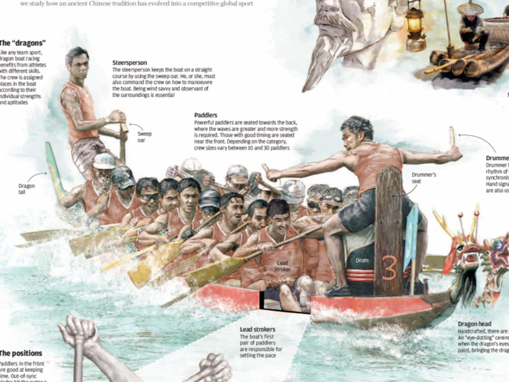
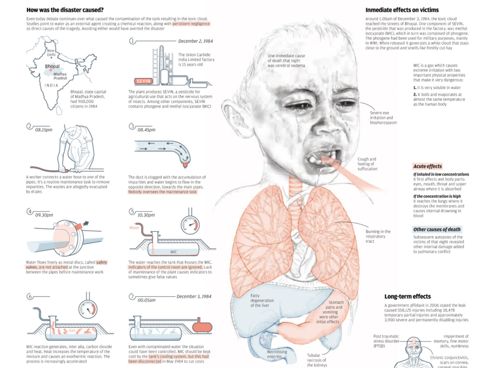
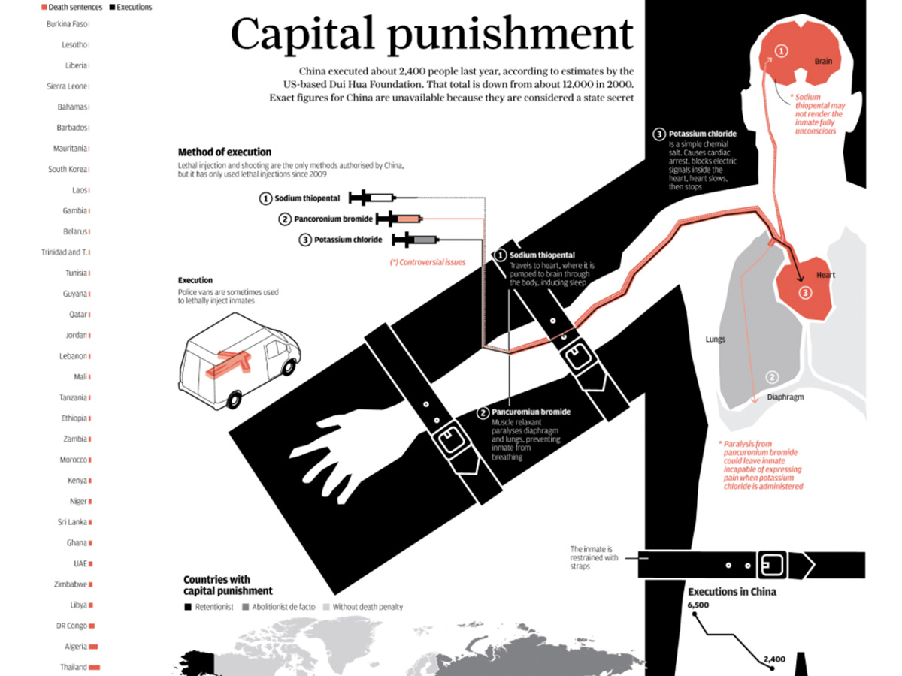
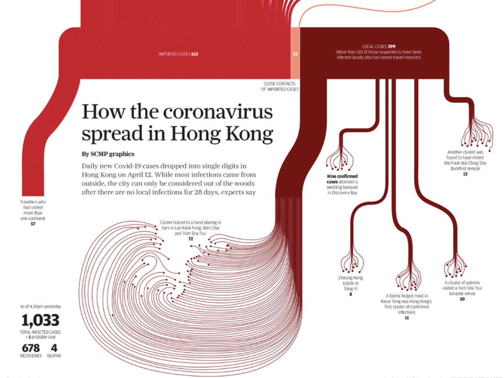
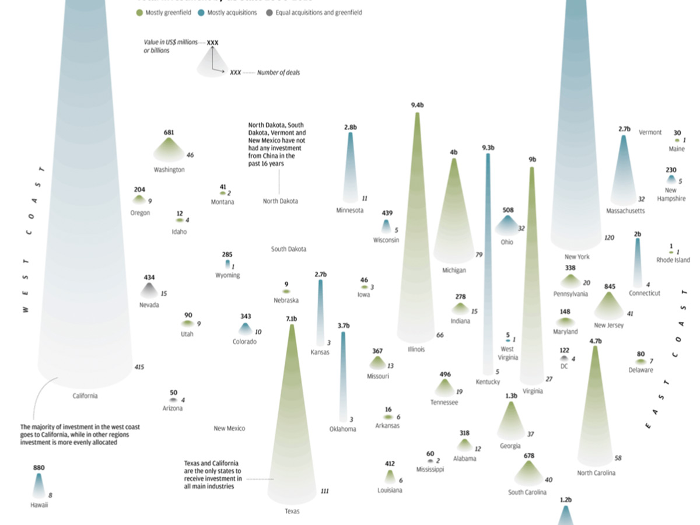
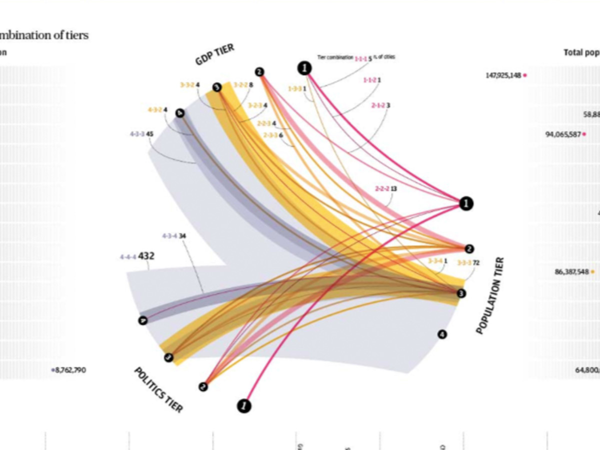
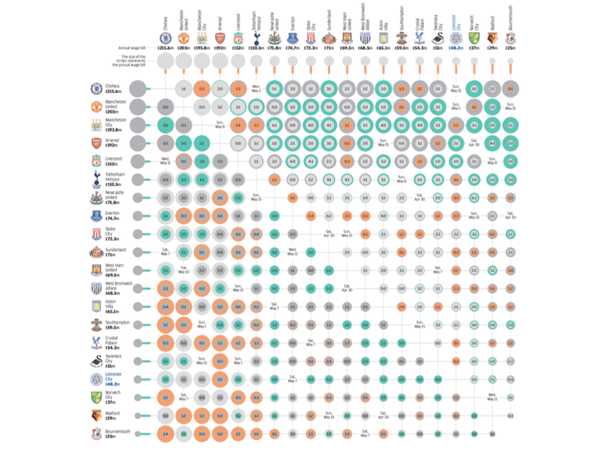

Información en gráficos figurativos
A long stopover
Publicado en South China Morning Post.

To the rhythm of the drum
Publicado en South China Morning Post.

30 years of night
Publicado en South China Morning Post.

Capital punishment
Publicado en South China Morning Post.
Información en gráficos no figurativos

How the coronavirus spread in Hong Kong
Publicado en South China Morning Post.

How China invests in America
Publicado en South China Morning Post.

Classifying China’s cities
Publicado en South China Morning Post.

Leicester's Cinderella season
Publicado en South China Morning Post.